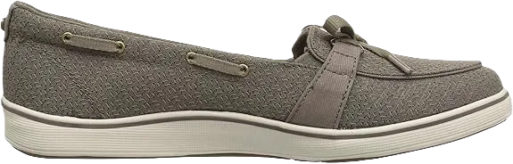
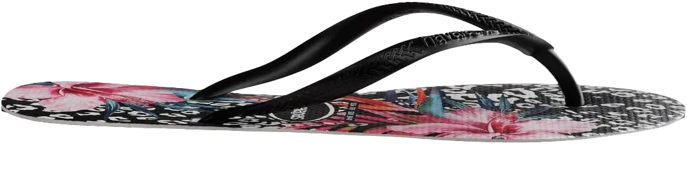
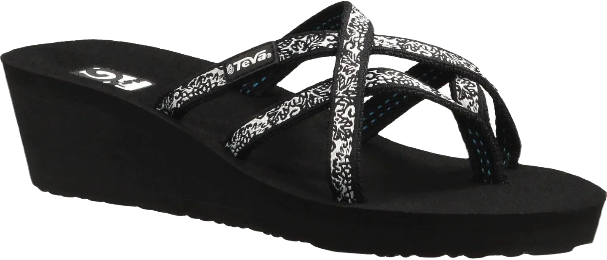

8 Best Men’s & Women’s Shoes for Cruises Reviews
Shoes only look good and last longer when used for their intended purpose. There are many types of shoes available in the market, and not only do they differ in appearance, but they also come with distinct characteristics. Every shoe is designed for a specific function; for example, if you are an athlete, you should choose shoes with athletic properties to support your performance in sports. On the other hand, if you are a teacher who spends long hours standing, you should opt for shoes that provide comfort and support throughout the day.
Similarly, if you know you'll be in an environment where your feet might get wet, it's essential to choose shoes with water-resistant features. This will not only protect your feet but also keep your shoes safe from damage, ensuring durability and longevity.
-
#1
Merrell woman’s jacardia Reef sandals
.webp)
This is one of the best shoes specifically designed for women, praised for both its quality and style. Its sleek and fashionable design makes it perfect to pair with any of your elegant outfits, making it a versatile addition to your wardrobe.
Not only is this shoe stylish, but it’s also incredibly comfortable. It features petite upper straps that offer a secure fit without compromising on comfort. Whether it's day or night, you can wear this shoe confidently, knowing it will provide both support and elegance.
The Merrel Women’s Jacardia Reef comes in various colors, allowing you to select the perfect shade according to your personal style and preference. This wide range of options makes it easy to find a pair that complements your look. -
#2
Grasshoppers women’s windham stylish
These shoes feature a durable rubber sole, offering exceptional quality and functionality for various tasks. Designed with comfort in mind, they provide excellent protection against water and injuries, making them ideal for farming—a demanding job that many people are passionate about. With these shoes, you can experience the best in comfort while effectively safeguarding your feet throughout your workday.
Durability is a key aspect of these shoes, ensuring they withstand the challenges of outdoor environments. Their lightweight design enhances comfort, allowing you to work without feeling weighed down or uncomfortable. You can move freely and efficiently, thanks to the thoughtful construction that supports your natural movements.
Additionally, both the outer and inner soles are built to endure various conditions, preventing any discomfort during wear. The shoes are also easy to clean, making maintenance simple, even after a day in the mud or dust. Crafted from high-quality materials, these shoes reflect our commitment to your well-being, allowing you to work in comfort and maintain good foot health. -
#3
All stars women’s chuck Taylor

This is another top choice for women’s shoes, perfect if you’re looking for a closed shoe that offers comfort during long wear. Whether you’re on deck or exploring areas away from the deck, this shoe should be your go-to option. Its design ensures versatility, making it suitable for various occasions.
The upper part of this shoe is crafted from high-quality canvas, which not only enhances its appearance but also adds to its durability. The canvas material gives the shoe a stylish yet sturdy look, ideal for long-lasting wear in different environments.
In addition, this shoe features a thick rubber sole, providing excellent support, especially on slippery surfaces. Its slip-resistant quality ensures firm footing, so even when you're off the deck, you won’t have to worry about slipping in such areas, making it a reliable sneaker choice. -
#4
Lifestride women’s Teller
.webp)
When it comes to cruises, you’ll often find yourself at dance parties and musical nights, where live music plays a central role. The last thing you want is for your feet to start hurting due to the wrong choice of shoes, preventing you from fully enjoying the event. The Life Stride Teller shoes are among the best options for dancing, offering excellent comfort that keeps you on your feet for long periods without discomfort.
These shoes are also well-suited for warm weather, making them a great choice for cruises. With a comfortable mid-heel, they strike the perfect balance between style and practicality, ensuring you can dance the night away while maintaining both comfort and support.
The Life Stride Teller shoes come in a variety of colors, allowing you to pick your favorite shade. Having your favorite color in a pair of shoes that delivers both comfort and style is definitely something worth considering! -
#5
Havaianas women’s floral
Havaianas are among the top brands that combine stylish design with comfort. These beach flops feature a stunning floral pattern, making them perfect for beach and cruise environments, where such designs truly stand out. The black straps paired with the floral design create a lovely contrast, especially under the bright sun, which adds to their appeal on sunny days.
Beyond their beautiful design, these flops come with a soft rubber sole featuring a rice pattern, providing an extra level of slip resistance on different surfaces. The durable sole ensures long-lasting wear, making these flops a reliable choice for cruises and beach outings. The attached straps are comfortable, ensuring you can wear them throughout the day without discomfort.
The insole of these flops is well-cushioned, offering excellent support so you don’t have to worry about tiring feet, even after exploring various areas off the deck. -
#6
Skechers go walk women’s lite
.webp)
Whether you're looking for athletic shoes or something for an adventurous outing, Skechers always stands at the top of the list. Known for producing shoes with excellent quality and durability, Skechers has become a go-to brand for both comfort and performance.
This particular shoe, designed specifically for women, has been crafted with extra care for comfort and style. It features a breathable synthetic sole, ensuring your feet stay cool and free from irritation. The good airflow provided by these shoes helps maintain comfort, making breathability a feature you shouldn’t compromise on.
Another advantage of these Skechers shoes is their lightweight design. This means you can walk for extended periods without feeling fatigued, adding to their appeal as the perfect companion for long walks or adventures. -
#7
Teva Mush Women’s Mandalyn Ola
Teva Mush women’s sandals are a favorite choice for many ladies, especially when on a cruise, where fashion is often a priority. These sandals offer both style and comfort, making them ideal for such occasions. One of their standout features is the slip-on design, which makes them incredibly easy to put on and take off, giving you the flexibility to adjust depending on the situation or while exploring different areas.
These sandals come in a variety of color options, allowing you to pick shades that match your personal style and wardrobe. With so many choices, you can easily find a pair that complements your favorite outfits, adding a fashionable touch to your look.
For added comfort, the Teva Mush sandals feature a wedge sole that enhances your overall comfort. Along with being comfortable, they are also known for their durability, thanks to their sturdy construction materials, ensuring the sandals last a long time without breaking down. They’re built to be a reliable companion for all your adventures. -
#8
Vionic Women’s Lizbeth T strap
.webp)
This sandal is an excellent choice, not just for cruises but also for city trips and exploring popular spots like restaurants and tourist attractions. Its comfort ensures that you can wear it all day without worrying about tired or aching feet. Unlike many sandals that may not provide lasting comfort, this one stands out as a reliable option for long hours on your feet.
The upper strap is made of durable leather, which enhances both the quality and longevity of the sandal. The upper also features a cork element, giving it a unique touch, while the metal accents add a stylish flair, making it a perfect fit for women who want both functionality and fashion.
This combination of comfort, durability, and style makes it an ideal sandal for various settings.